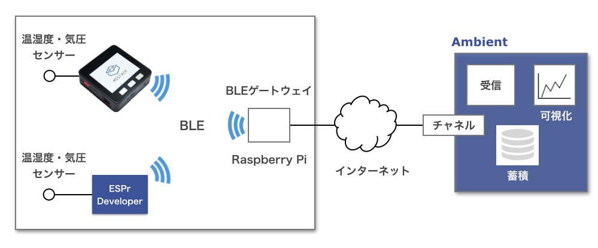
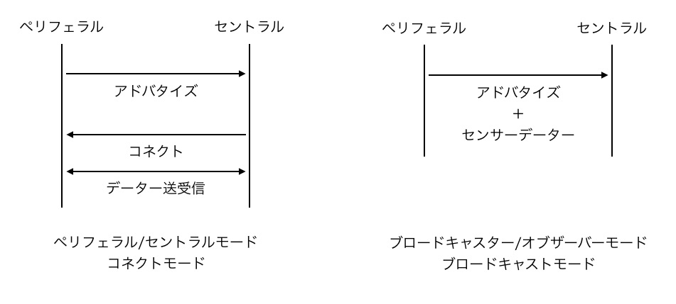
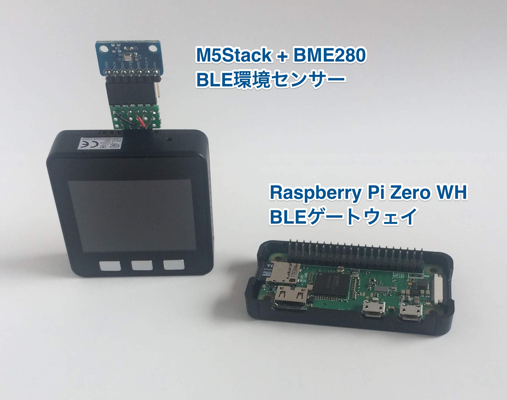
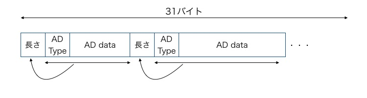
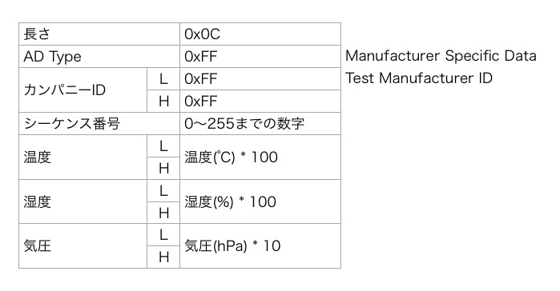

「M5StackでBLE環境センサ端末を作る」ではBluetooth Low Energy (BLE) でデータを発信するセンサ端末を作りました。 今回はこの端末からデータを受けて、クラウドにデータを送るゲートウェイを作ります。
ESP32を使ったゲートウェイは「BLE環境センサ・ゲートウェイ(ESP32編)」をご覧ください。

センサ端末はM5StackにBME280を接続し、温度、湿度、気圧を測定し、BLEで発信するものです。 M5Stackに搭載されているものと同じマイコンESP32を搭載するESPr Developer 32でも動作します。 センサ端末の開発は「M5StackでBLE環境センサ端末を作る」をご覧ください。
ゲートウェイはBLE通信ができて、インターネットにも接続できるものが必要です。今回はRaspberry Piを使います。
BLE通信にはコネクトモードとブロードキャストモードがあります。

コネクトモードでは、センサ端末などのペリフェラルが自らの存在を発信(アドバタイズ)します。 セントラルと呼ばれるゲートウェイはアドバタイジングパケットをスキャンし、自分が必要とするペリフェラルを見つけ、 ペリフェラルに接続(コネクト)してデータの送受信をおこないます。
ブロードキャストモードでは、ペリフェラルがセンサデータなどをアドバタイジングパケットに載せて送り、セントラルがそれを受信します。
コネクトモードは双方向通信ですので、ペリフェラルからデータを取得するだけでなく、セントラル側からパラメーター設定をおこなうといった場合はコネクトモードが必要です。 ただし、ペリフェラルはセントラル側からのコネクトを待つ必要があるため、一般にはDeep Sleepできず、電力消費を抑えにくくなります。
ブロードキャストモードは単方向です。ペリフェラルからデータを取得するだけなら、ブロードキャストモードが適しています。 しかもブロードキャストモードは、ペリフェラルがデータを送りたいときだけアドバタイズし、あとはDeep Sleepすることができるので、 ペリフェラル側の電力消費を低く抑えられます。
コネクトモード、ブロードキャストモード、それぞれで動作するセンサ端末を開発したので、ゲートウェイもそれぞれのモードの物を作ります。
ゲートウェイのハードウェアは「Raspberry Pi Zero WH」を使いました。 65mm x 30mm と非常に小さいサイズですが、Wi-FiとBLE通信機能があり、RAMも512MBあります。BLEゲートウェイを動かすには十分な性能です。

OSは「Raspbian GNU/Linux 9.4 (stretch)」を使いました。 OSのセットアップは「Raspberry Pi Zero(W)のセットアップ」などをご覧ください。
Pythonはpyenvを導入し、Pythonは3.6.5をインストールしました。 pyenvとPythonのインストールは「RaspberryPiにpyenvを導入」などをご覧ください。
Raspberry Pi Zero WHへのPythonのインストールは非常に時間がかかります。ネットワーク環境にもよりますが、私の環境では1時間6分かかりました。 途中、不安になりますが、気長にお待ちください。
PythonのBLEライブラリにはいくつかのものがあります。 「PythonからBLEを制御するライブラリの調査」に比較レポートがあります。 Python3系で使えてドキュメントがしっかりしている 「bluepy」を使いました。
Raspberry Piへのbluepyのインストールは次のようにおこないます。
pi$ sudo apt-get install libglib2.0-dev pi$ pip install bluepy
これはpyenvを使っている場合ですが、使っていない場合は次のようにします。
pi$ sudo pip3 install bluepy
PythonでAmbientにデータを送信するライブラリがあるので、それも次のようにインストールします。
pi$ pip install git+https://github.com/AmbientDataInc/ambient-python-lib.git
ブロードキャストモードでは、センサ端末がセンサデータをアドバタイジングパケットの中のアドバタイジングデータという領域に載せて発信します。 アドバタイジングデータは次のような構造の最大31バイトのデータです。

BLE環境センサでは下図のようにアドバタイジングデータをセットしています。

ブロードキャストモードのゲートウェイプログラムは比較的単純です。センサ端末が送るアドバタイジングデータをスキャンして見つけ、 アドバタイジングデータからセンサ値を取り出し、Ambientに送ります。
bluepyでは、Scannerクラスのインスタンスを作り、scan()メソッドを呼ぶとスキャンが始まります。 withDelegate()メソッドでdelegate関数を指定すると、スキャンでBLEデバイスが見つかった時にcallback関数として呼ばれます。 delegate関数にはDefaultDelegateクラスが用意してあり、このクラスのサブクラスを作り、handleDiscovery()メソッドをオーバーライドすることで、 独自のcallback関数を定義します。
handleDiscovery()の引数のscanEntryはscanEntryクラスです。getScanData()メソッドで(Ad Type、その説明、Ad Typeに対する値)のタプルが得られます。
スキャンすると、BLE電波が届く範囲にあって、その時アドバタイズしている複数のBLE端末からのアドバタイジングデータが得られます。 その中で説明が’Manufacturer’で値の先頭のカンパニーIDが0xffffのデータがBLE環境センサのアドバタイジングデータです。 そのデータを見つけて、データから温度、湿度、気圧を取り出し、Ambientに送ります。
プログラム全体はGithubに置きました。
BLEデバイスにアクセスするのにroot権限が必要なので、プログラムは次のように起動します。
pi$ sudo python env2ambientBS.py
Raspberry Piからログアウトしても、ゲートウェイプログラムが終了しないようにするには、次のように起動します。
pi$ sudo nohup python env2ambientBS.py < /dev/null &
センサ端末とゲートウェイを動かし、データを送信したAmbientのチャネルページを見ると、送信した温度、湿度、気圧データが確認できます。
この記事はアンビエントデーターの下島が担当しました。